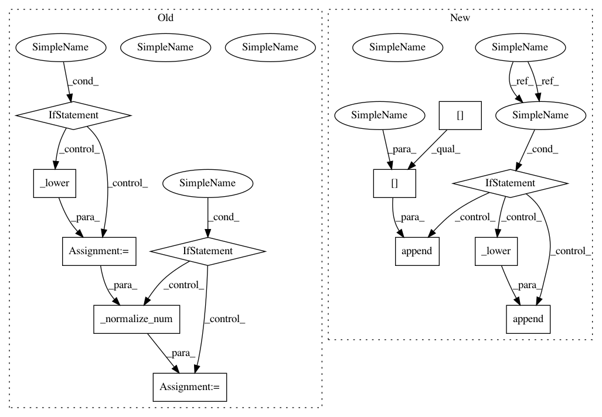

ce4a4c6551c8acbb701e16ed8988a17a4209a57c,sequenceLabelling/preprocess.py,,to_vector_simple_with_elmo,#Any#Any#Any#Any#Any#,258
Before Change
local_tokens = []
for j in range(0, min(len(tokens[i]), maxlen)):
word = tokens[i][j]
if lowercase:
word = _lower(word)
if num_norm:
word = _normalize_num(word)
local_tokens.append(word)
subtokens.append(local_tokens)
return embeddings.get_sentence_vector_with_ELMo(subtokens)
After Change
for i in range(0, len(tokens)):
local_tokens = []
for j in range(0, min(len(tokens[i]), maxlen)):
if lowercase:
local_tokens.append(_lower(tokens[i][j]))
else:
local_tokens.append(tokens[i][j])
subtokens.append(local_tokens)
return embeddings.get_sentence_vector_with_ELMo(subtokens)
In pattern: SUPERPATTERN
Frequency: 3
Non-data size: 12
Instances
Project Name: kermitt2/delft
Commit Name: ce4a4c6551c8acbb701e16ed8988a17a4209a57c
Time: 2018-07-21
Author: patrice.lopez@science-miner.com
File Name: sequenceLabelling/preprocess.py
Class Name:
Method Name: to_vector_simple_with_elmo
Project Name: kermitt2/delft
Commit Name: ce4a4c6551c8acbb701e16ed8988a17a4209a57c
Time: 2018-07-21
Author: patrice.lopez@science-miner.com
File Name: sequenceLabelling/preprocess.py
Class Name:
Method Name: to_vector_elmo
Project Name: kermitt2/delft
Commit Name: ce4a4c6551c8acbb701e16ed8988a17a4209a57c
Time: 2018-07-21
Author: patrice.lopez@science-miner.com
File Name: sequenceLabelling/preprocess.py
Class Name:
Method Name: to_vector_simple_with_elmo
Project Name: kermitt2/delft
Commit Name: 151f9e7d141372ce45fc4367b81385eeccc95093
Time: 2018-06-20
Author: patrice.lopez@science-miner.com
File Name: sequenceLabelling/preprocess.py
Class Name:
Method Name: to_vector_simple_with_elmo